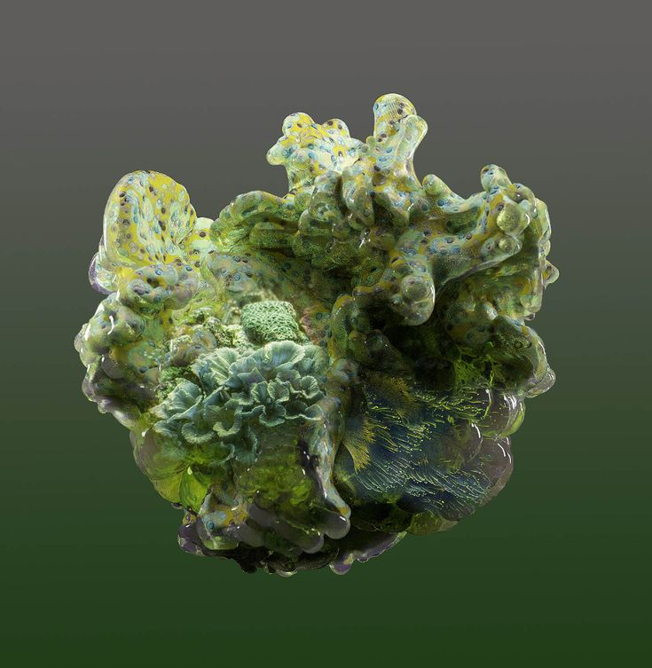
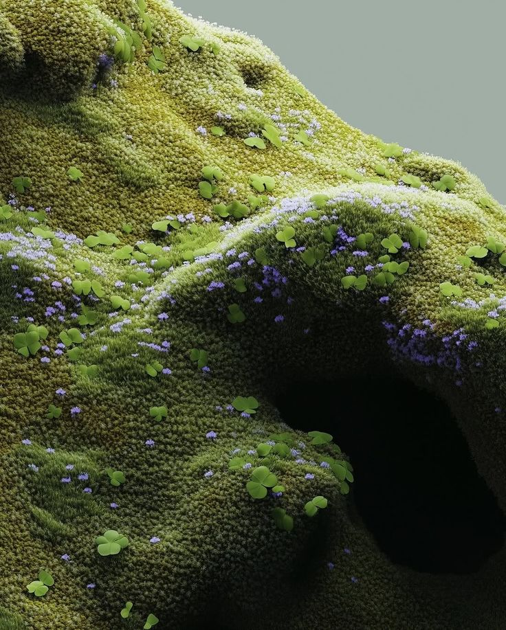

+
Atendimento Individualizado
Cada caso é avaliado com atenção, respeitando histórico, sintomas, objetivos e necessidades específicas de cada paciente.
Uma apresentação institucional dedicada a destacar trajetória, especialidades e a forma cuidadosa como cada paciente é acompanhado em todas as etapas do tratamento.
Apresentação profissional
Cada caso é avaliado com atenção, respeitando histórico, sintomas, objetivos e necessidades específicas de cada paciente.
Atuação orientada por conhecimento técnico, atualização constante e compromisso com condutas baseadas em evidência.
O cuidado vai além da consulta, com orientações claras, seguimento responsável e proximidade em cada etapa do processo.


Uma prática médica moderna e cuidadosa integra avaliação clínica, tecnologia e acompanhamento próximo para oferecer decisões mais seguras e personalizadas.
Consulta detalhada para compreender histórico, sintomas e necessidades individuais.
Investigação diagnóstica orientada por critério técnico e raciocínio clínico.
Definição de conduta e planejamento terapêutico individualizado.
Seguimento contínuo para monitorar resposta, evolução e próximos passos.